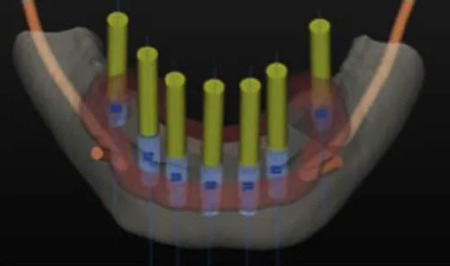
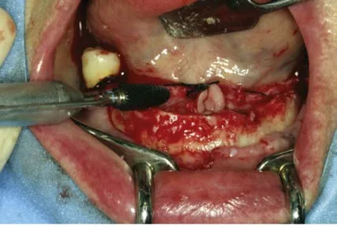

نسخه استخراجشده؛ ترجمه یا تأیید علمی انجام نشده است. وضعیت: captured
اگر یک جمله از این یونیت به خاطرت بماند، این باشد: مطمئنترین راه کم کردن خطاهای موقعیتدهی حین جراحی، توسعهی یک راهبرد جامع در مرحلهی ارزیابی پیش از عمل است.
به منطق این جمله دقت کن. راهحل خطای موقعیت، دقت بیشتر حین جراحی نیست — چون در اتاق جراحی، اطلاعات کافی برای تصمیم درست در دسترس نیست. راهحل، انتقال تصمیم به مرحلهای است که داده در آنجا هست.
نقطهی شروع: نوع پروتز نهایی. انتخاب میان ثابت (FP-1، FP-2، FP-3) و متحرک (RP-4، RP-5)، موقعیت ایدهآل ایمپلنتها را دیکته میکند. یعنی سه محوری که در سه درس قبل خواندی، مختصاتشان از طرح پروتزی میآید.
ابزار انتقال برنامه به دهان: تمپلیت. تمپلیت محدودکنندهی کامل، هر خطای استئوتومی را در صفحههای مزیودیستال و باکولینگوال مهار میکند. عمق را فقط وقتی مهار میکند که استاپ مته در آن گنجانده شده باشد؛ پس عمق را همیشه جداگانه برنامهریزی و کنترل کن.
و ارزیابی پیش از عمل باید ابعاد، تراکم و زاویه را با توجه به پروتز برنامهریزیشده مشخص کند. توجه کن که تراکم هم در همین فهرست است — یعنی برنامهریزی موقعیت و برنامهریزی پروتکل حفاری بر پایهی تراکم در یک مرحله انجام میشوند.

چند تصمیم پروتزی وجود دارد که پیش از جراحی گرفته میشوند و مستقیماً برنامهی جراحی را عوض میکنند:
۱. پیچی یا سمانی. پس از ارزیابی ستاپ مفصلبندیشده، فرم قوس، استخوان موجود و عوامل نیرویی، باید تعیین شود که پروتز FP-3 پیچشونده خواهد بود یا سمانشونده. و این تصمیم بر زاویهی کاشت اثر میگذارد — چون در پروتز پیچی، محل خروج پیچ باید قابل قبول باشد.
۲. فضای لازم. پروتز سمانشونده بهطور ایدهآل ۸ میلیمتر فضا میخواهد. اگر این فضا (پس از اصلاح اکلوژن مقابل در صورت لزوم) فراهم نشود، پروتز پیچشونده یا تغییر طرح به بریج اندیکاسیون دارد.
۳. استئوپلاستی برنامهریزیشده. وقتی ارتفاع و عرض فراوان وجود دارد، بهویژه در FP-3 و اوردنچر، استئوپلاستی برای افزایش فضای ارتفاع تاجی پیش از کاشت اغلب اندیکاسیون دارد. یعنی گاهی عمداً استخوان را کم میکنی تا فضای پروتزی بسازی — و این یک تصمیم برنامهریزیشده است، نه یک واکنش حین عمل.
فرمول موقعیت استئوتومیها. فرمولی برای موقعیت ایدهآل استئوتومیهای اولیه با پیشبینی ایمپلنتهای نهایی وجود دارد — مثلاً مرکز استئوتومی اولیه = نصف قطر ایمپلنت + ۲ میلیمتر از دندان؛ برای ایمپلنت با قطر ۴ میلیمتر، ۴ میلیمتر از دندان. یعنی حتی محل شروع مته هم از پیش قابل محاسبه است، نه چیزی که سر عمل تخمین بزنی.
جمعبندی یونیت: سه محور موقعیت، سه بُعد یک تصمیم واحدند — و آن تصمیم، پیش از برداشتن تیغ گرفته میشود. خطای موقعیت بیشتر وقتها خطای برنامهریزی است که در اتاق جراحی فقط اجرا شده.

نوع سؤال: ساخت کلمه · 6 خانه
حروف منبع: ر · ر · ب · ه · ا · د